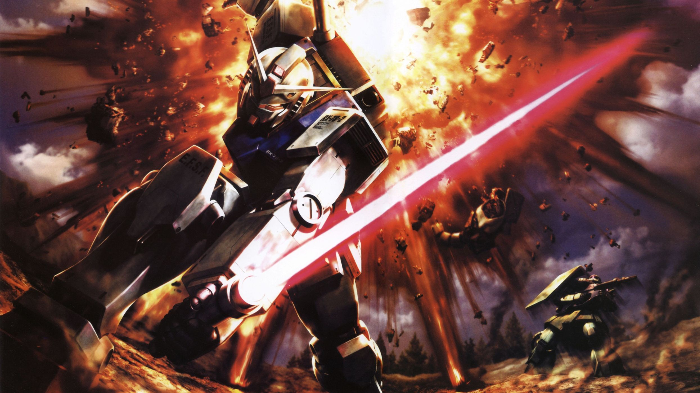

Depiction of Future in Mobile Suit Gundam
The image is taken from WallpaperUp
Mobile Suit Gundam is created by Yoshiyuki Tomino and tells the story of wars and politics between different factions, which use advanced weaponry like spaceships and mobile suits in combat. Mobile suits, which are the giant robots piloted by humans, are the main attraction of Gundam. However, they are not the focus. The focus is on characters and the universe that is presented. Mobile Suit Gundam got incredibly popular and spanned countless other timelines and spinoffs. What I'm going to be talking about is the original series, which is the Universal Century timeline.
In the Universal Century timeline, because of overpopulation and lack of resources, the countries of the world are united as one big country: The Earth Federation. The Earth Federation builds space colonies called "Sides" and starts to send people to live there to solve overpopulation on Earth. However, people who are living in the colony that is the farthest away from Earth, start to believe that Earth, which is now populated by strong and wealthy people of Earth Federation, shouldn't be used by humans and left alone as an ancient relic. These people then gain independence from Earth Federation as The Republic of Zeon. However, The Republic of Zeon becomes corrupted over time and turn into the Principality of Zeon, which is a dictatorship. The tensions rise between two nations and war begins. This war also brings Newtypes to the light, which is the next step in human evolution. Newtypes are the result of people living in space and they have stronger intuition than regular people.
What I love about this setting is that instead of showing futuristic tech, it delves into topics like governments, their politics in the future, and human evolution.